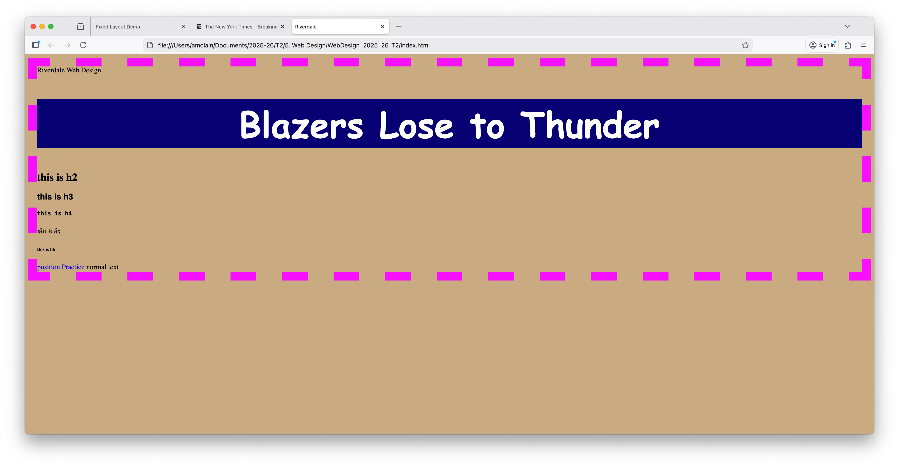

First Page
This was the first page we did. It had an internal stylesheet and explored the different kinds of headers that are possible.
This was the first page we did. It had an internal stylesheet and explored the different kinds of headers that are possible.

Showed how to include a navigation element and stressed that we should be using tags that represent the content accurately. That helps bots and browsers navigate the content effectively.
Also, We went on to show a float layout and the use of IDs, by including two nav bars. One went across the top as it tends to do automatically, and one floated to the left.
This page showed the use of articles to group information together--like with magazine or newspaper articles. Each one is likely to have a heading of some kind, maybe an image, certainly some paragraphs. This is a great way to structure information so automatic readers can group information effectively.
Styling these is a great way to separate groups of information using margins or borders, and maybe even rounded corners and/or box shadows (which we haven't actually learned yet :))
Here we finally started putting our styling into an external stylesheet file (extension .css). This allows us to apply the same stylesheet to multiple html pages.
We also experimented with styling elements based on classes or IDs. Importantly, you can have more than one element with the same class on a page. Any given ID should only appear once on any html page.
Also, it is worth noting that the more specific the identifier, the more priority that styling will take.